While Stardust (Stardust) supports the integration of Web-based UIs for business process management activities into its Stardust Portal, this support is traditionally focused on Java based Web technologies like JSP or JSF. The introduction of process-driven UI mashups is based on several assumptions:
Web UI integration is introduced by Stardust to offer:
Web UI development proves to be a quickly changing environment offering a rapidly changing variety of tools. Most of those tools are script-based. Thus the productivity of Web developers can be increased by using non-Java (or rather non-JVM) based Web user interfaces.
The support for non-colocated deployment of Stardust and integrated Web user interfaces, provides the following advantages:
Being browser-based, there is no server side session that could be used to share state between Stardust and the GWT (Google Web Toolkit) application.
Thus, Stardust provides specific APIs, which are described in the section JavaScript API and SOAP Web Service API respectively. A GWT application might be integrated as follows:
ippInteractionUri=http://...
Location.getParameter("ippInteractionUri")
and stores it as a field for example.For detailed information on the usage of GWT applications, please refer to the Google Web Toolkit documentation site.
Stardust provides techniques for lightweight and implementation technology neutral Web mashups as follows:
To enable REST based interaction with an interactive activity instance, Stardust provides the concept of an Interaction Resource. This resource provides means to perform the following interactions according to REST principles:
An HTTP binding of the WADL endpoint is typically be provided at
${ippServicesBaseUri}/rest/application.wadl
Find an example WADL (Web Application Description Language) description at the Web Application Description Language site of W3C.
The lifecycle of any interaction resource is associated with the duration of the associated activity instance in state Application.
No manipulation to the Interaction resource will immediately cause a state change on the associated activity instance. Such state change will only occur under orchestration from the embedding Stardust Portal.
Depending on the data type being used for input and output parameters for interactions, various media types can be produced and consumed. The following list describes the primary media type per data type and possible alternative representations:
As batch operations need to encode multiple parameters in one data structure, there is no means of providing the same kind of flexibility in media type support as with single parameter read / writes. The representation for batch reads and writes is application/xml. The values for parameters are included in the XML message in their primary representation.
The following sequence diagram depicts the message flow between all participants:
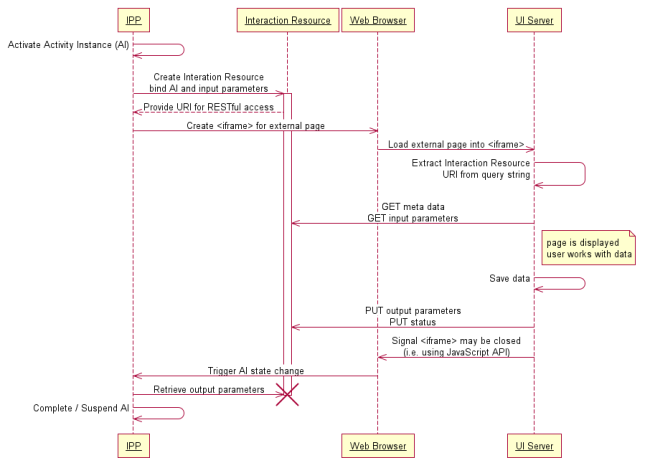
Figure: Sequence Diagram describing Message Flow
An additional SOAP API equivalent to the previously described REST API is provided. The mapping between SOAP operations and REST requests is as follows:
An HTTP binding of the SOAP endpoint is typically be provided at
$\{ippServicesBaseUri\}/soap/BpmInteractionsService
A WSDL contract can be obtained from
${ippServicesBaseUri\}/soap/BpmInteractionsService?wsdl
To simplify Web UI development, the base location of the calling Stardust Portal services endpoints is provided by an additional query parameter named ippServicesBaseUri, for example:
ippServicesBaseUri=http://localhost:9090/dev/services
This query parameter can be used to transparently bind to a SOAP endpoint implementation of the invoking Stardust Portal.
Embedded Web UIs are provided with a JavaScript API supporting in-browser interactions with the embedding Stardust Portal. The API is provided in form of a JavaScript source file, which you find in the folder META-INF/xhtml/processportal of the ipp-workflow-perspective.jar, residing in the ipp-portal.war.
This file needs to be included as follows:
<script type="text/javascript" src="${ippPortalBaseUri}/plugins/processportal/IppProcessPortalClient.js"></script>
If this path is not accessible, then copy the IppProcessPortalClient.js from the ipp-workflow-perspective.jar file and specify the location of the copied file.
After inclusion, a new module InfinityBpm.ProcessPortal will be available. Any of the following operations is exposed as a function defined in the InfinityBpm.ProcessPortal module.
The InfinityBpm.ProcessPortal provides the following methods:
| JavaScript-Call | Description |
|---|---|
| InfinityBpm.ProcessPortalClient.completeActivity() | Completes the current activity instance |
| InfinityBpm.ProcessPortalClient.suspendActivity() | Suspends the current activity instance |
| InfinityBpm.ProcessPortalClient.abortActivity() | Aborts the current activity |
| InfinityBpm.ProcessPortalClient.qaPassActivity() | Passes quality assurance for the activity. If using this function, make sure that the activity is in Review state. |
| InfinityBpm.ProcessPortalClient.qaFailActivity() | Fails quality assurance for the activity. If using this function, make sure that the activity is in Review state. |
You can use such code in your custom pages, which are shown via the External Web application application type. You can leverage the activity-instance buttons of the Stardust Portal toolbar right away in your own page by the JavaScript methods mentioned above.
<html>
<head>
<script type="text/javascript" src="${ippPortalBaseUri}/plugins/processportal/IppProcessPortalClient.js"></script>
</head>
<body>
<button onclick="InfinityBpm.ProcessPortal.completeActivity()">Complete your activity instance now</button>
</body>
</html>
To simplify Web UI development, the base location of the calling Stardust Portal is provided by an additional query parameter named ippPortalBaseUri, for example:
ippPortalBaseUri=http://localhost:9090/dev
This query parameter can be used to transparently bind to a JavaScript implementation of the invoking Stardust Portal.
To allow embedded panel to actively terminate the current interaction and allow the user to work on different activities, the functions completeActivity, suspendActivity(boolean) and abortActivity are provided. Both functions will cause an equivalent side effect as explicitly clicking on the appropriate button in the activity panel toolbar. The following example shows how to invoke this API from a Grails submit button, triggering a Suspend and Save:
<g:submitToRemote class="save" value="Save and Close" action="ajaxPost"
onComplete="InfinityBpm.ProcessPortal.suspendActivity(true)>
Successful termination of a Web UI interaction will require a previous write of output parameters via either a REST operation against the Interaction Resource or an equivalent invocation of the appropriate Web Service API.
When using external panels that are session-based, launching multiple ICEfaces or Trinidad activity panels via URI query parameters can break the initialization of the embedded panels. Thus, if external panels are session based, please make sure the state management is considering the interaction ID in addition of using session scope. Please note that Trinidad and ICEfaces panels embedded sharing the portal session can be adjusted by using portalTab scope beans instead of session scope beans.
To add an External Web Application to a model perform the following steps:
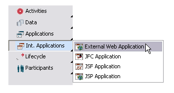
Figure: Create an External Web Application.
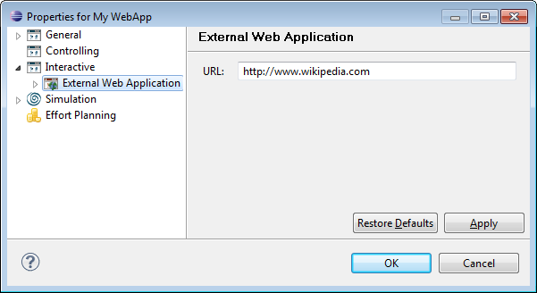
Figure: External Web Application Properties.
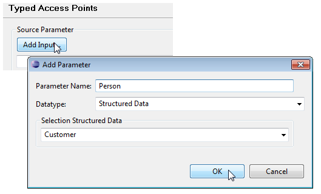
Figure: Add Input Source Parameters
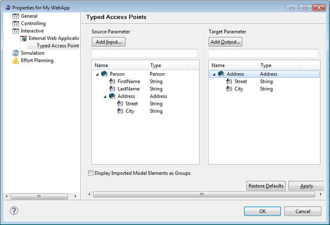
Figure: Setting Typed Access Points.
You can modify the specified source and target access points.
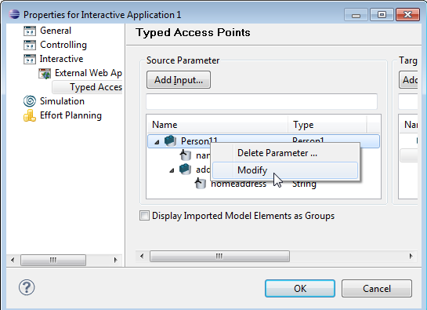
Figure: Modify Typed Access Point
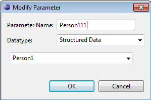
Figure: Modify Typed Access Point
You can delete the source and target access points.
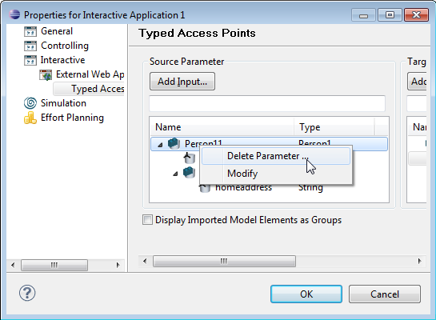
Figure: Delete Typed Access Point
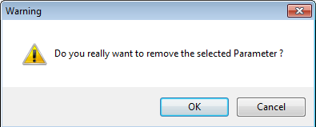
Figure:
Warning - Delete Typed Access Point
You can use access point path as well as data path in the data mapping. Per default, only the full value of a parameter is used. You can change this behavior to either enter the name of declared parameters or the data mapping IDs. To have both options, change the property Carnot.Compatibility.Interactions.SupportDataMappingIds, in your carnot.properties file to true.
It is also possible to write an attribute of a structured parameter to a primitive variable, e.g.:
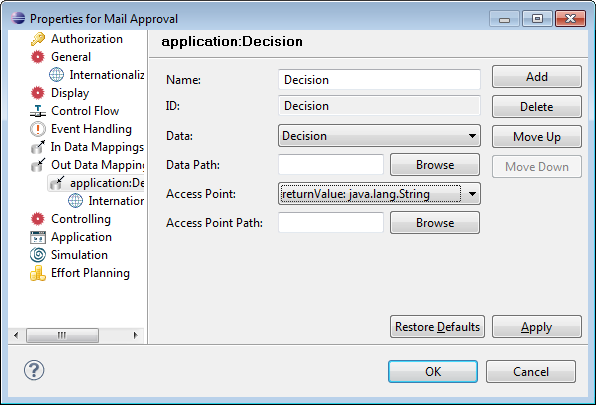
Figure: Using a Structured Data Attribute in Out Data Mapping
This is a small example to demonstrate the usage of an External Web Application associated with an application activity.
In a dynamic Web project create a model as follows:
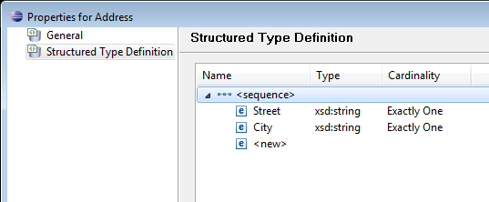
Figure: Structured Type Address
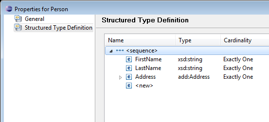
Figure: Structured Type Person
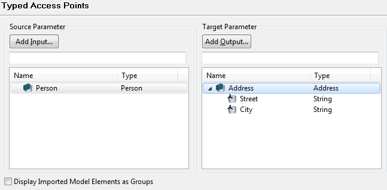
Figure: Add Typed Access Points
Your model now looks similar to the model in the following figure:
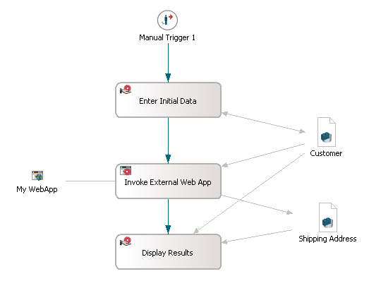
Figure: Example Model
Now start your server, deploy the model and run the activity associated with the External Web Application in the Stardust Portal. Your application should come up with the URL you entered in the properties page.
For example, if you entered the URL http://www.wikipedia.com, the following page is coming up:
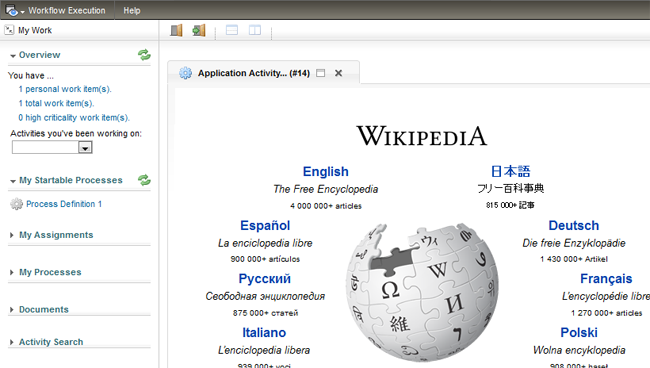
Figure: Example URL.
Now you may inspect the interaction via its REST interface.
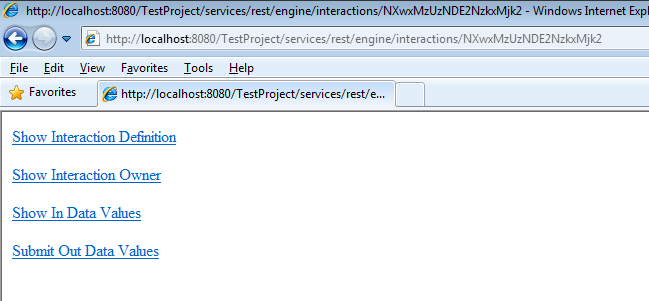
Figure: Interaction URI
Selecting one of these options displays the according xml file. For example Show In Data Values displays all the in-data values of the activity, which invoked the External Web Application:
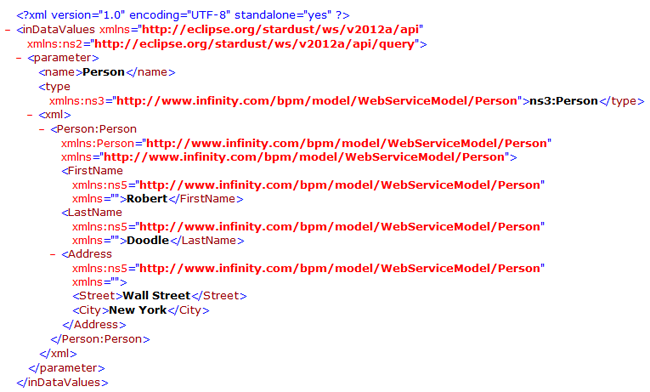
Figure: Example - Show In Data Values
entered in the entry fields for a structured data:
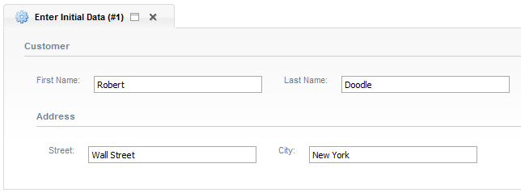
Figure: Example - Entered In Data Values.